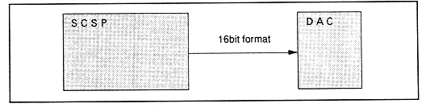

| Source | Address | Data | source | address | data | ||||||||||||||
| 7 | 6 | 5 | 4 | 3 | 2 | 1 | 0 | 7 | 6 | 5 | 4 | 3 | 2 | 1 | 0 | ||||
| EFREG0 | 100017H | EFSDL0 | EFPAN0 | EFREG9 | 100137H | EFSDL9 | EFPAN9 | ||||||||||||
| EFREG1 | 100037H | EFSDL1 | EFPAN1 | EFREG10 | 100157H | EFSDL10 | EFPAN10 | ||||||||||||
| EFREG2 | 100057H | EFSDL2 | EFPAN2 | EFREG11 | 100177H | EFSDL11 | EFPAN11 | ||||||||||||
| EFREG3 | 100077H | EFSDL3 | EFPAN3 | EFREG12 | 100197H | EFSDL12 | EFPAN12 | ||||||||||||
| EFREG4 | 100097H | EFSDL4 | EFPAN4 | EFREG13 | 1001B7H | EFSDL13 | EFPAN13 | ||||||||||||
| EFREG5 | 1000B7H | EFSDL5 | EFPAN5 | EFREG14 | 1001D7H | EFSDL14 | EFPAN14 | ||||||||||||
| EFREG6 | 1000D7H | EFSDL6 | EFPAN6 | EFREG15 | 1001F7H | EFSDL15 | EFPAN15 | ||||||||||||
| EFREG7 | 1000F7H | EFSDL7 | EFPAN7 | EXTS0 | 100217H | EFSDL16 | EFPAN16 | ||||||||||||
| EFREG8 | 100117H | EFSDL8 | EFPAN8 | EXTS1 | 100237H | EFSDL17 | EFPAN17 | ||||||||||||
Figure 4.57: Connection between SCSP and DAC
